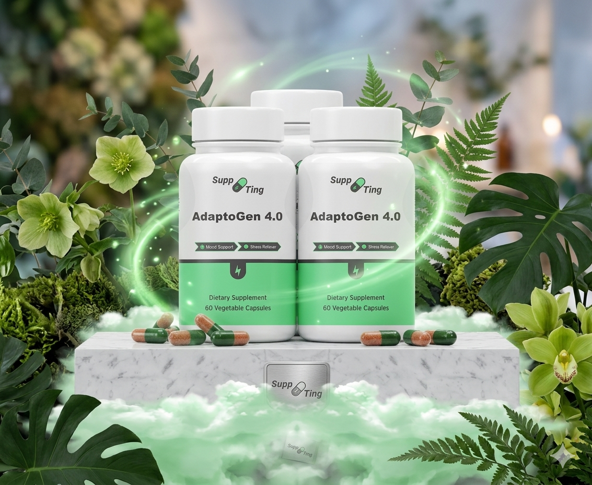

Modern lifestyles can be demanding. Work responsibilities, family commitments and constant connectivity may increase stress levels and affect overall wellbeing.
Cortisol is often called the body's primary stress hormone.
Cortisol plays an important role in many normal bodily processes.
It helps support how the body responds to daily demands.
Cortisol is closely connected to how we react to stressful situations.
Healthy cortisol patterns are naturally linked to sleep and wake cycles.
Many adults seek healthier routines when daily demands increase.
Busy schedules can make it difficult to prioritize wellbeing.
Mental fatigue may impact productivity and focus.
Quality rest is a key component of overall wellness.
Long workdays and modern routines can create additional pressure.
Wellness often starts with consistent daily habits.
Prioritizing sleep may support overall health and wellbeing.
Regular activity remains one of the foundations of healthy living.
Nutritious food choices help support daily wellness goals.
Relaxation techniques can be valuable additions to healthy routines.
Adaptogens have become increasingly popular among wellness-focused adults.
Commonly included in broader healthy lifestyle approaches.
Growing interest reflects changing wellness priorities.
Many adults explore adaptogens while seeking healthier routines.
Often combined with sleep, nutrition and exercise habits.

Adaptogens have become increasingly popular among adults interested in supporting daily wellness, maintaining healthy routines and promoting overall balance.
AdaptoGen 4.0 combines carefully selected ingredients commonly associated with modern wellness practices and healthy lifestyle support.
Visit Official WebsiteMany adults interested in wellness, balance and healthy living are exploring adaptogen supplements as part of their daily routine.
Visit Official WebsiteCortisol is a hormone involved in the body's natural response to stress.
Sleep, nutrition and exercise are commonly recommended as part of a balanced lifestyle.
Adaptogens are natural ingredients frequently discussed within the wellness community.
Explore trusted wellness resources and educational content before making decisions.